EDIÇÕES
1960 Roma, ItáliaOs Jogos Paralímpicos de Verão de 1960, aconteceram pela primeira vez, em Roma, na Itália, entre os dias 18 e 25 de Setembro de 1960. Como sendo os primeiros jogos, a lesão na medula espinhal foi única deficiência presente nesses jogos. Participaram cerca de 400 atletas de 23 países. Chamado primeiramente de "Olimpíadas dos Portadores de Deficiência", o termo "Jogos Paralímpicos" só foi aprovado pelo Comitê Olímpico Internacional (COI) mais tarde, em 1984.Modalidades→Tiro com arco→Atletismo →Dardos →Sinuca →Natação →Tênis de mesa →Basquetebol em cadeira de rodas →Esgrima em cadeira de rodas Medalhas
|
1964 Tóquio, JapãoOs Jogos Paralímpicos de Verão de 1964, ou então mais conhecidas como as Paralímpiadas de Verão de 1964, originalmente conhecidas como os 13os. Jogos Internacionais de Stoke Mandeville, foram a segunda edição dos Jogos Paralímpicos.Realizados em Tóquio, Japão,foram a última edição realizada na mesma cidade que os jogos até os Jogos Paralímpicos de Verão de 1988. O termo "Jogos Paralímpicos" só foi aprovado pelo Comitê Olímpico Internacional em 1984, o Comitê Paralímpico Internacional só foi fundado em 1989. Contrastando com os Jogos de 1964, muitos eventos tiveram mais de três participantes, o que acabou com a garantia automática de medalhas em cada provaModalidades→Tiro com arco→Atletismo →Dardos Paralímpicos →Sinuca →Natação →Tênis de mesa →Levantamento de Peso →Basquetebol em cadeira de rodas →Esgrima em cadeira de rodas Medalhas
|
1968 Tel Aviv, IsraelA terceira edição dos Jogos Paralímpicos de Verão aconteceram em 1968. O planejamento original era da realização do evento junto com os Jogos Olímpicos de Verão de 1968 na Cidade do México, mas em 1966, o governo mexicano desistiu da realização dos Jogos devido dificuldades financeiras. Numa medida para evitar o cancelamento dos jogos, o governo israelense apresentou Tel Aviv como sede alternativa. Estes foram os primeiros Jogos Paralímpicos a não serem realizados na mesma sede dos Jogos Olímpicos.Modalidades→Tiro com arco→Lawn bowls →Atletismo →Dardos Paralímpicos →Sinuca →Natação →Tênis de mesa →Levantamento de Peso →Basquetebol em cadeira de rodas →Esgrima em cadeira de rodas Medalhas
|
1972 Heidelberg, AlemanhaOs Jogos Paralímpicos de Verão de 1972 foram a quarta edição dos Jogos Paralímpicos. Foram realizados em Heidelberg, então Alemanha Ocidental.Modalidades→Tiro com arco→Lawn bowls →Atletismo →Dardos Paralímpicos →Sinuca →Natação →Tênis de mesa →Levantamento de Peso →Basquetebol em cadeira de rodas →Esgrima em cadeira de rodas →Goalball (esporte de demonstração) Medalhas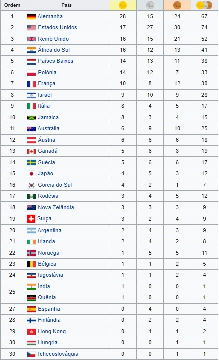 |
1976 Toronto, CanadáOs Jogos Paralímpicos de Verão de 1976, foi a quinta edição dos Jogos Paralímpicos. Os jogos foram realizados em Toronto, Ontário. Estes eram originalmente conhecidos como Torontolympiad.Esta foi a primeira vez que os Jogos Paralímpicos foram realizados nas Américas. Modalidades→Tiro com arco→Lawn bowls →Atletismo →Dardos Paralímpicos →Sinuca →Natação →Tênis de mesa →Levantamento de Peso →Basquetebol em cadeira de rodas →Esgrima em cadeira de rodas →Goalball (esporte de demonstração) →Snooker →Tiro Medalhas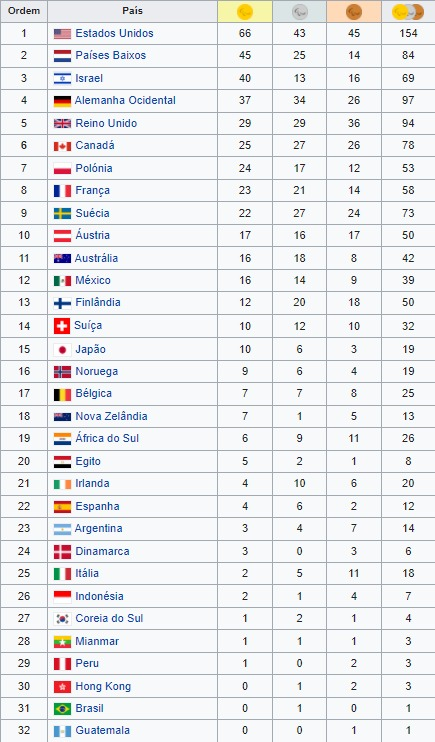 |
1980 Arnhem, HolandaAs Paraolímpiadas de Verão de 1980 foram os 6ºs Jogos Paraolímpicos a realizarem-se. Tiveram lugar em Arnhem, Holanda.Modalidades→Tiro com arco→Lawn bowls →Atletismo →Dardos Paralímpicos →Halterofilismo →Natação →Tênis de mesa →Lutas →Basquetebol em cadeira de rodas →Esgrima em cadeira de rodas →Goalball (esporte de demonstração) →Voleibol →Tiro Medalhas
|
1984 Stoke Mandeville, Reino Unido / Nova York, Estados UnidosAs Paralimpíadas de Verão de 1984 foram realizados em Stoke Mandeville, Grã-Bretanha (atletas em cadeira de rodas) e em Nova Iorque, Estados Unidos (atletas com paralisia cerebral, deficiências visuais, amputados e "outros"). Stoke Mandeville foi a primeira sede dos Jogos de Stoke Mandeville de 1948, visto como o precursor dos Jogos Paralímpicos.Estas foram as últimas Paralimpíadas de Verão que não foram realizadas na mesma sede das Olimpíadas de Verão. Pela primeira vez na história os atletas foram dividos em 5 categorias de necessidades especiais: amputados, com paralisia cerebal, com deficiências visuais, em cadeira de rodas, e outros. A criação da categoria de cadeira de rodas foi criada especificamente para aqueles atletas que tinham deficiências na medula espinhal. Alguns atletas na categoria de amputados também foram incluídos na mesma categoria. No atletismo, foi incluído pela primeira vez o evento de maratona em cadeira de rodas. As dezessete modalidades que tiveram suas disputas nessa edição dos jogos estão listadas abaixo, juntamente com as categorias que englobaram suas disputas. Modalidades→Atletismo→Basquetebol →Bocha →Ciclismo →Elevação →Levantamento de peso →Halterofilismo →Esgrima →Futebol de 7 →Goalball →Hipismo →Lawn bowls →Lutas →Natação →Snooker →Tênis de mesa →Tiro com Arco →Tiro →Voleibol Medalhas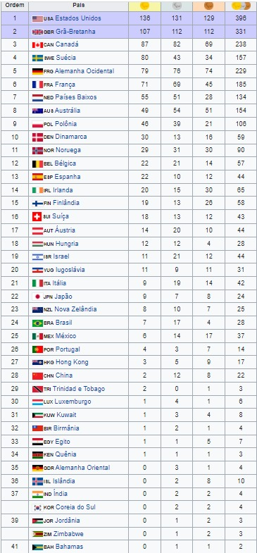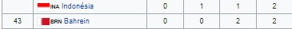 |
1988 Seul, Coreia do SulAs Paralimpíadas de Verão de 1988 foram realizados em Stoke Mandeville, Grã-Bretanha (atletas em cadeira de rodas) e em Nova Iorque, Estados Unidos (atletas com paralisia cerebral, deficiências visuais, amputados e "outros"). Stoke Mandeville foi a primeira sede dos Jogos de Stoke Mandeville de 1948, visto como o precursor dos Jogos Paralímpicos.Estas foram as últimas Paralimpíadas de Verão que não foram realizadas na mesma sede das Olimpíadas de Verão. Pela primeira vez na história os atletas foram dividos em 5 categorias de necessidades especiais: amputados, com paralisia cerebal, com deficiências visuais, em cadeira de rodas, e outros. A criação da categoria de cadeira de rodas foi criada especificamente para aqueles atletas que tinham deficiências na medula espinhal. Alguns atletas na categoria de amputados também foram incluídos na mesma categoria. No atletismo, foi incluído pela primeira vez o evento de maratona em cadeira de rodas. As dezessete modalidades que tiveram suas disputas nessa edição dos jogos estão listadas abaixo, juntamente com as categorias que englobaram suas disputas. Modalidades→Atletismo→Basquetebol →Bocha →Ciclismo →Elevação →Levantamento de peso →Halterofilismo →Esgrima →Futebol de 7 →Goalball →Hipismo →Lawn bowls →Lutas →Natação →Snooker →Tênis de mesa →Tiro com Arco →Tiro →Voleibol Medalhas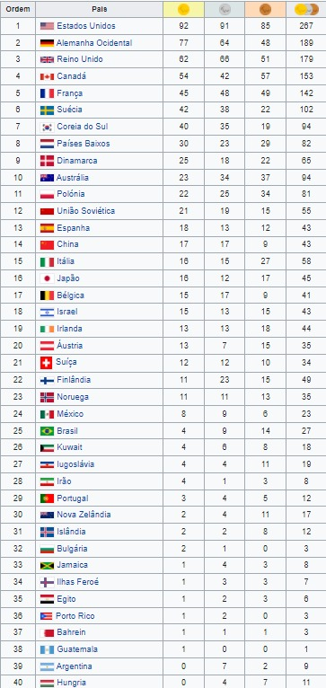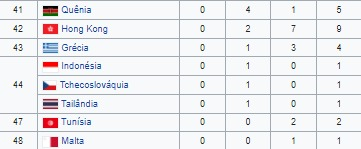 |
1992 Barcelona, EspanhaOs X Jogos Paraolímpicos foram realizados em Barcelona, na Espanha. O evento foi organizado pelo mesmo comitê organizador dos Jogos Olímpicos de Verão de 1992.Modalidades→Atletismo→Basquetebol →Bocha →Ciclismo →Elevação →Levantamento de peso →Halterofilismo →Esgrima →Futebol de 7 →Goalball →Hipismo →Lawn bowls →Lutas →Natação →Snooker →Tênis de mesa →Tiro com Arco →Tiro →Voleibol Medalhas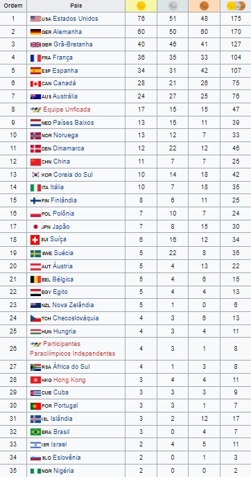 |
1996 Atlanta, Estados UnidosOs Jogos de 1996 Paraolimpíada foram em Atlanta, Geórgia, nos Estados Unidos, com o lema: "O Triunfo do Espírito Humano" (The Triumph of the Human Spirit).Modalidades→Atletismo→Basquetebol →Bocha →Ciclismo →Elevação →Levantamento de peso →Halterofilismo →Esgrima →Futebol de 7 →Goalball →Hipismo →Lawn bowls →Lutas →Natação →Snooker →Tênis de mesa →Tiro com Arco →Tiro →Voleibol Medalhas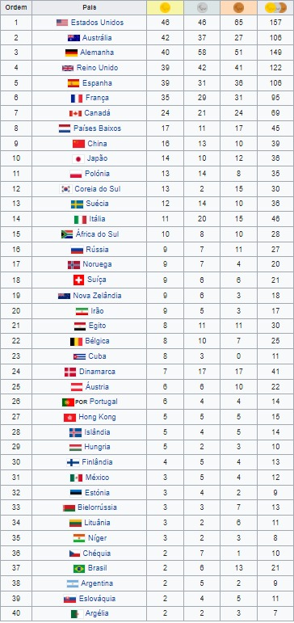 |
2000 Sydney, AustráliaO principal objetivo era o desenvolvimento uma rota e um evento que ajudasse manter um vincúlo entre os Jogos Olímpicos e Jogos Paralímpicos. A rota visitou a capital de cada estado da Austrália e tal como a tocha olímpica foi igualmente foi centrada na região metropolitana de Sydney,dando prioridade ás comunidades que não receberam o revezamento da Tocha Olímpica,e como esta era a área de principal para vendas de ingressos. A tocha foi acesa por um ritual aborígene nos jardins da Casa do Parlamento, em Canberra em 5 de Outubro.Modalidades→Atletismo→Basquetebol →Bocha →Ciclismo →Elevação →Levantamento de peso →Halterofilismo →Esgrima →Futebol de 7 →Goalball →Hipismo →Lawn bowls →Lutas →Natação →Snooker →Tênis de mesa →Tiro com Arco →Tiro →Voleibol Medalhas |
2004 Atenas, GréciaOs Jogos Paralímpicos de Verão de 2004 aconteceram, pela décima segunda vez, em Atenas, na Grécia, entre os dias 17 e 28 de Setembro de 2004, sob o lema "Força, Inspiração, Celebração".Esta edição contou com participação de mais de 3500 atletas de 144 países (21 a mais que na edição dos Jogos de 2000) para competir em 19 modalidades. Uma das grandes iniciativas para esta edição foi a adoção inédita de um comitê organizador único, que tem a responsabilidade de coordenar as ações dos Jogos Olímpicos e Paralímpicos. Pela primeira na história os Jogos Olímpicos e Paraolímpicos de Verão são organizados pelo mesmo comitê organizador,fazendo parte do mesmo evento. Modalidades→Atletismo→Basquetebol →Bocha →Ciclismo →Elevação →Levantamento de peso →Halterofilismo →Esgrima →Futebol de 7 →Goalball →Hipismo →Lawn bowls →Lutas →Natação →Snooker →Tênis de mesa →Tiro com Arco →Tiro →Voleibol Medalhas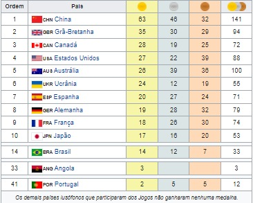 |
2008 Pequim, ChinaOs Jogos Paralímpicos de Verão de 2008, aconteceram pela décima terceira vez, em Pequim, na China, entre os dias 6 e 17 de Setembro de 2008.Como os Jogos Olímpicos de Verão desse mesmo ano, as provas de Hipismo foram realizadas em Hong Kong, e a Vela, em Qingdao. O mesmo slogan dos Jogos Olímpicos será utilizado: "One World, One Dream" (Um mundo, um sonho), em chinês tradicional 同一個世界同一個夢想 e em simplificado 同一个世界同一个梦想. Aproximadamente 4.200 atletas de 148 países estiveram em Pequim, muitos, com sua primeira participação em Paralímpiadas. Os jogos incluíram atletas com diversas deficiências físicas e sensoriais, tal como paralisia cerebral, amputações e cegueira. Desde 2000, os deficientes mentais tem sido excluídos dos jogos. Modalidades→Atletismo→Basquetebol →Bocha →Ciclismo →Elevação →Levantamento de peso →Halterofilismo →Esgrima →Futebol de 7 →Goalball →Hipismo →Lawn bowls →Lutas →Natação →Snooker →Tênis de mesa →Tiro com Arco →Tiro →Voleibol Medalhas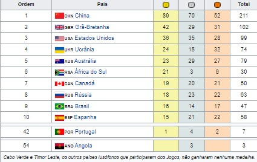 |
|
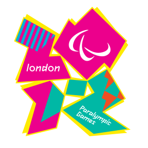 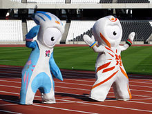 |
Os Jogos Paralímpicos de Verão de 2012 foram os décimo quartos Jogos Paralímpicos da história, realizaram-se entre 29 de agosto e 09 de setembro de 2012, em Londres, no Reino Unido depois da escolha da cidade para sediar os Jogos Paralímpicos e Olímpicos de Verão de 2012. Foi a segunda edição dos Jogos no Reino Unido; o país já sediara em 1984 os Jogos Paraolímpicos. Ainda assim, o país sediou o ancestral das Paralimpíadas, os Jogos de Stoke Mandeville. Estes foram realizados pela primeira vez em 1948, organizados pelo Dr. Ludwig Guttman e pelo Hospital de Stoke Mandeville, no mesmo dia da cerimônia de abertura das Olimpíadas de Verão de 1948, que foi o primeiro evento de atletismo exclusivamente organizado para atletas deficientes. No relatório de avaliação, o Comitê Olímpico Internacional (COI) afirmou que "como berço do esporte paralímpico, a capacidade do mesmo na Grã-Bretanha está entre os melhores no mundo." |
Modalidades→Atletismo→Bocha →Ciclismo →Estrada →Pista →Basquetebol em cadeira de rodas →Hipismo →Esgrima em cadeira de rodas →Futebol de cinco →Futebol de sete →Goalball →Judô →Levantamento de peso →Natação →Remo →Rugby em cadeira de rodas →Tênis em cadeira de rodas →Tênis de mesa →Tiro com arco →Tiro →Vela →Voleibol Medalhas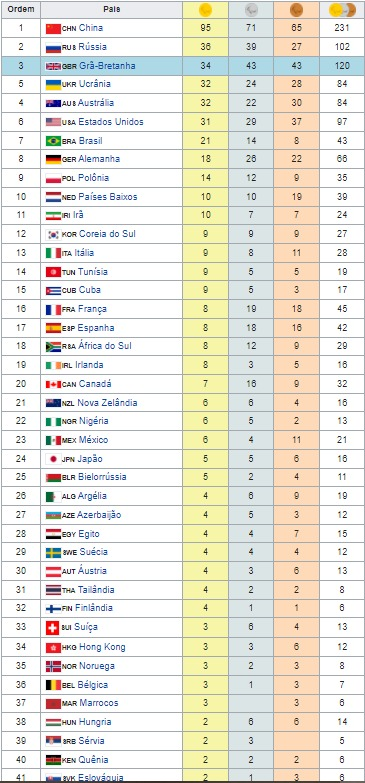 |
|
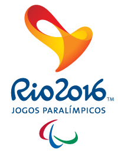 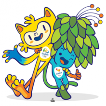 |
Jogos Paralímpicos de Verão de 2016, oficialmente Jogos da XV Paralimpíada, mais comumente Paralimpíada do Rio 2016, foi um evento multiesportivo para atletas com deficiência organizado pelo Comitê Paralímpico Internacional, realizado no Rio de Janeiro, Brasil, de 7 a 18 de setembro de 2016. Foi a primeira vez que os Jogos Paralímpicos foram sediados na América do Sul, na América Latina e em um país lusófono. Foi também a segunda vez que aconteceram no hemisfério sul, depois de Sydney 2000. Além disso, pela nona vez o Brasil sediou um grande evento multiesportivo.Esta edição teve a inclusão da paracanoagem e paratriatlo no programa esportivo. |
Modalidades→Atletismo→Bocha →Ciclismo →Estrada →Pista →Basquetebol em cadeira de rodas →Hipismo →Esgrima em cadeira de rodas →Futebol de cinco →Futebol de sete →Goalball →Judô →Levantamento de peso →Natação →Remo →Rugby em cadeira de rodas →Tênis em cadeira de rodas →Tênis de mesa →Tiro com arco →Tiro →Vela →Voleibol Medalhas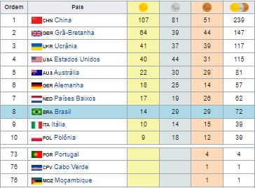 |

|
Jogos Paralímpicos de Verão de 2020 (em japonês: 2020年夏季パラリンピック会; 2020-Nen Kaki Pararinpikku?), conhecidos oficialmente como os Jogos da XVI Paralimpíada, mais comumente Tóquio 2020, foi um evento multiesportivo para atletas com deficiência organizado pelo Comitê Paralímpico Internacional (CPI) e sediado em Tóquio no Japão. A eleição da cidade-sede ocorreu em 7 de setembro de 2013 na 125ª Sessão do Comitê Olímpico Internacional, em Buenos Aires, capital da Argentina, América do sul. Os jogos ocorreram entre 24 de agosto e 5 de setembro de 2021. Originalmente, os jogos estavam programados para ocorrer entre 25 de agosto e 6 de setembro de 2020, porém, em 24 de março de 2020, o Comitê Olímpico Internacional (COI) e o Comitê Organizador local anunciaram oficialmente que os Jogos Olímpicos e Paralímpicos de Verão de 2020 seriam adiados para 2021, devido ao avanço da Pandemia de COVID-19, marcando a primeira vez que os Jogos Paralímpicos foram adiados. Mesmo sendo realizados em 2021, a organização optou por manter a nomenclatura oficial com a data de 2020. Foi a segunda vez que Tóquio sedia os Jogos Paralímpicos, já que sediaram anteriormente em 1964. Esta edição dos Jogos teve a introdução do badminton e do taekwondo como modalidades esportivas, substituindo a vela e o futebol de sete. |
Modalidades→Atletismo→Bocha →Ciclismo →Estrada →Pista →Basquetebol em cadeira de rodas →Hipismo →Esgrima em cadeira de rodas →Futebol de cinco →Futebol de sete →Goalball →Judô →Levantamento de peso →Natação →Remo →Rugby em cadeira de rodas →Tênis em cadeira de rodas →Tênis de mesa →Tiro com arco →Tiro →Vela →Voleibol Medalhas |